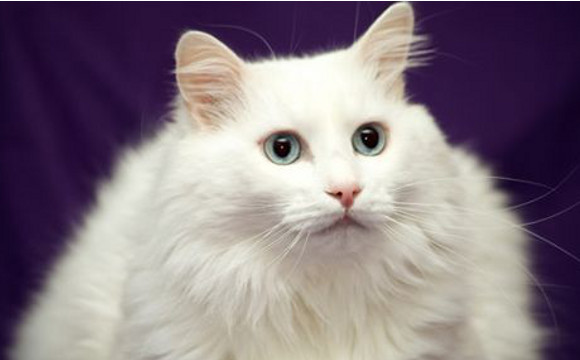

Welcome!
Y, viéndole don Quijote de aquella manera, con muestras de tanta tristeza, le dijo: Sábete, Sancho, que no es un hombre más que otro si no hace más que otro. Todas estas borrascas que nos suceden son señales de que presto ha de serenar el tiempo y han de sucedernos bien las cosas; porque no es posible que el mal ni el bien sean durables, y de aquí se sigue que, habiendo durado mucho el mal, el bien está ya cerca. Así que, no debes congojarte por las desgracias que a mí me suceden, pues a ti no te cabe parte dellas.Y, viéndole don Quijote de aquella manera, con muestras de tanta tristeza, le dijo: Sábete, Sancho, que no es un hombre más que otro si no hace más que otro. Todas estas borrascas que nos suceden son señales de que presto ha de serenar el tiempo y han de sucedernos bien las cosas; porque no es posible que el mal ni el bien sean durables, y de aquí se sigue que, habiendo durado mucho el mal, el bien está ya cerca. Así que, no debes congojarte por las desgracias que a mí me suceden, pues a ti no
Cat Body Types
- Oriental
- Foreign
- Semi-Foreign
- Semi-Cobby
- Cobby